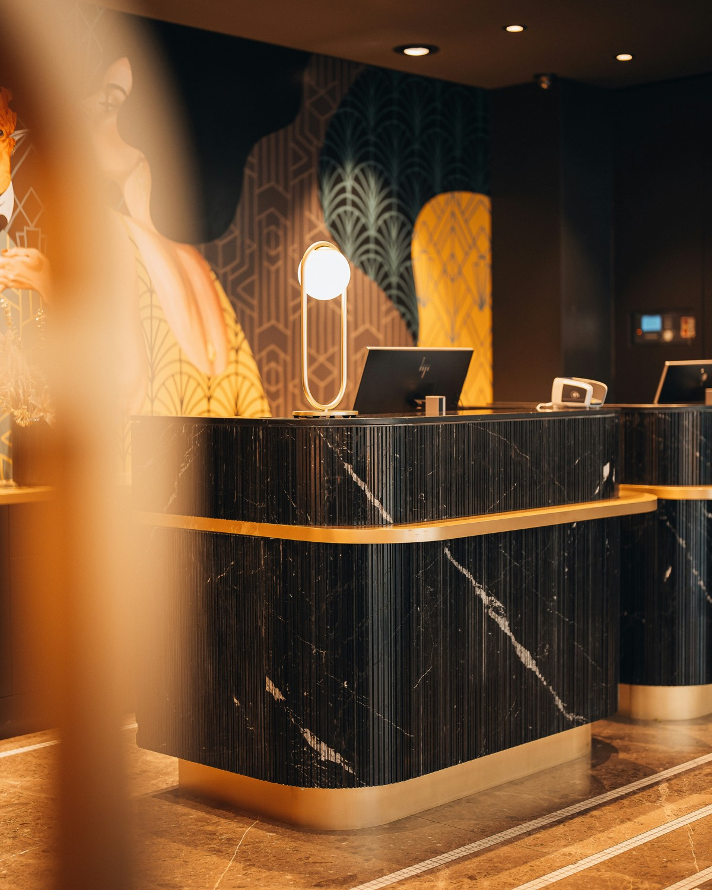
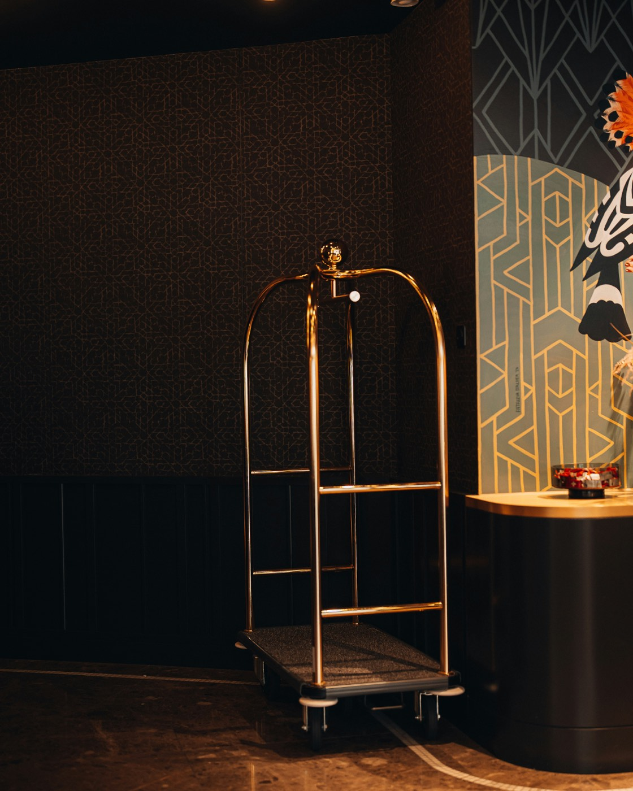
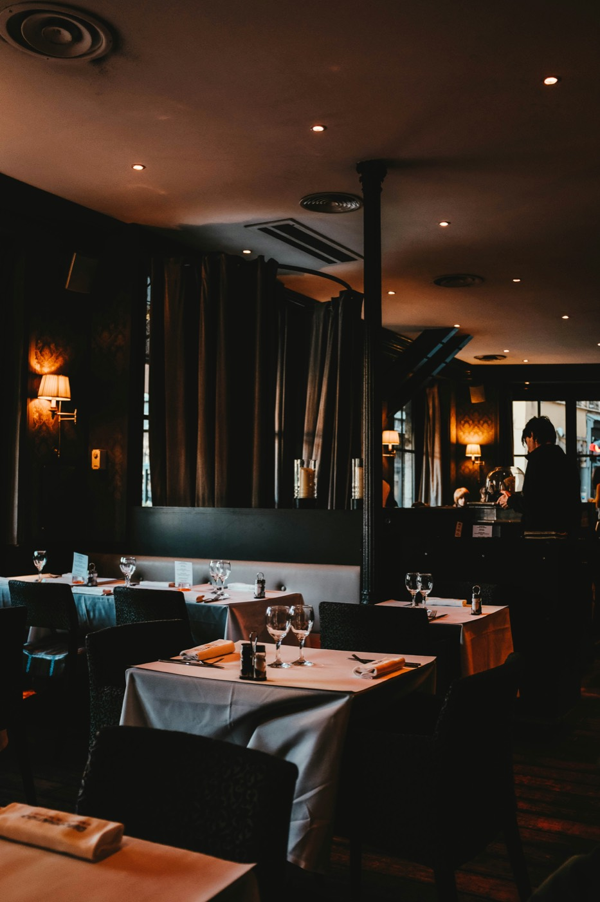

Belege einsammeln
Aus jedem Outlet, dem Kartenterminal und den Gästekonten — zusammengezogen, sobald geschlossen ist.
Closewise prüft den Abend gegen Kartenterminal, Gästekonten und Kassenzählung — und legt Ihrer Schichtleitung die kurze Liste hin.
Für Hotels in Berlin · 800 € im Monat

Die Stunde, in der der Abend abgerechnet wird.
Der Abschluss läuft jede Nacht gleich ab. Drei Schritte, die Closewise übernimmt, während Ihre Schichtleitung den Dienst zu Ende bringt.
Aus jedem Outlet, dem Kartenterminal und den Gästekonten — zusammengezogen, sobald geschlossen ist.
Betrag gegen Betrag, Buchung gegen Konto, Zählung gegen Erwartung. Was aufgeht, verschwindet.
Was übrig bleibt, steht auf einer Seite: mit Betrag, Quelle und wahrscheinlicher Ursache.
Jeder Beleg wird gegen den Kartenstapel, die Gästekonten und die gezählte Lade gehalten. Was übereinstimmt, wird abgehakt und verschwindet. Stehen bleibt, was jemand ansehen muss.
20 Ausnahmen in sieben Nächten. Die schwerste war Nacht 5.
Bereit.
Vierzehn Belege, elf gehen auf. Zu den übrigen drei steht da, welche Quellen auseinanderlaufen, um welchen Betrag es geht und was erfahrungsgemäß dahintersteckt.
Nichts davon ist Betrug. Es sind die Nachlässigkeiten eines vollen Abends — und sie kosten, weil sie niemandem auffallen.
Closewise liegt bei denen, die nachts im Haus sind. Sie öffnen die Liste, klären drei Punkte und zeichnen ab. Die Buchhaltung bekommt am Morgen Zahlen, an denen sie nichts mehr korrigieren muss.
Niemand muss dafür ein neues Programm lernen. Wer heute den Abschluss macht, macht ihn morgen weiter — nur kürzer.
Eine Kartenzahlung, die das Terminal gebucht hat und die Kasse nie sah. 142,00 €.
Fall ansehen
Ein Storno nach Abschluss. Zwei Wahrheiten für denselben Tisch, 78,50 €.
Fall ansehen
Eine Zimmerbuchung, die nie auf dem Gästekonto ankam — bis zum Check-out unsichtbar.
Fall ansehenDemodaten · Beträge aus einer beispielhaften Nacht.
Stellen Sie Ihr Haus ein. Die Rechnung läuft mit.
Restaurants, Bars, Roomservice, Spa.
Inklusive Nachtzuschlägen und Nebenkosten.
Was Ihre Schichtleitung heute Nacht je Outlet mit dem Abgleich verbringt.
Closewise bringt den Abschluss auf 8,5 Minuten je Outlet — nach den Annahmen unter der Rechnung.
20.340 €
pro Jahr · 1.695 € pro Monat
Keine Einrichtungsgebühr. Monatlich kündbar.
Gerechnet mit 2,5 Minuten fürs Öffnen, 1,5 Minuten je Ausnahme und vier Ausnahmen in einer normalen Nacht — also 8,5 Minuten je Outlet, an 360 Nächten im Jahr. Eine Schätzung nach Ihren Angaben, keine Zusage.
Keine Staffel nach Outlets, keine Gebühr je Beleg. Wer zwölf Outlets hat, zahlt so viel wie das Haus mit zweien.
800 €
im Monat, zuzüglich Umsatzsteuer
Mehrere Häuser? Dann sprechen wir über einen Satz für die Gruppe.
Restaurant, Bar, Spa — jedes schließt für sich, und jedes bringt seine eigenen Eigenheiten mit. Closewise kennt sie und prüft sie getrennt.
Nein. Closewise liest, was Ihre Systeme ohnehin erzeugen — die Belege aus den Outlets, den Kartenumsatz, die Buchungen auf den Gästekonten. Am Ablauf an der Kasse ändert sich nichts.
Ihre Schichtleitung öffnet die Liste und sieht die Ausnahmen. In einer normalen Nacht sind das drei bis vier Punkte. Was aufgeht, bekommt sie gar nicht mehr zu sehen.
Dann prüft Closewise gegen die übrigen und weist aus, welche Quelle fehlt. Ein fehlender Abgleich wird als offen geführt, nicht als geprüft.
Auf Servern in Deutschland. Es werden Belegdaten verarbeitet, keine Zahlungsmittel und keine vollständigen Kartennummern.
800 € im Monat je Haus, unabhängig von der Zahl der Outlets. Keine Einrichtungsgebühr, monatlich kündbar.
Ja. Wir lassen einen echten Abschluss aus Ihrem Haus durchlaufen und gehen die Funde gemeinsam durch. Das dauert etwa zwanzig Minuten.
Wir lassen einen echten Abschluss aus Ihrem Haus durchlaufen. Sie sehen in zwanzig Minuten, was dabei herauskommt.
Termin buchen